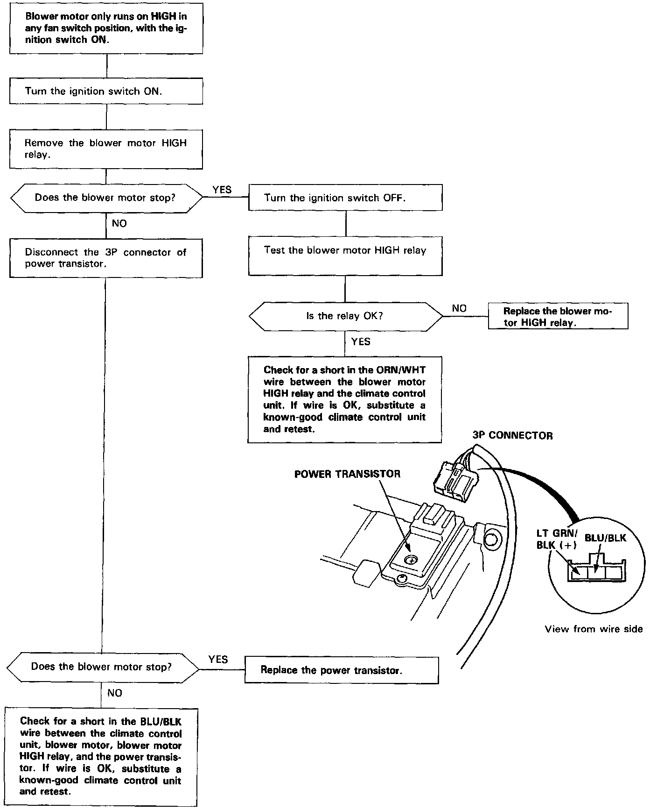

Operation CHARM
: Car repair manuals for everyone.
Home
>>
Acura
>>
1994
>>
Legend Coupe V6-3206cc 3.2L SOHC FI
>>
Repair and Diagnosis
>>
Heating and Air Conditioning
>>
Blower Motor
>>
Testing and Inspection
>>
Automatic Climate Control - Flowcharts
>>
Blower Always Runs on High
Blower Always Runs on High
